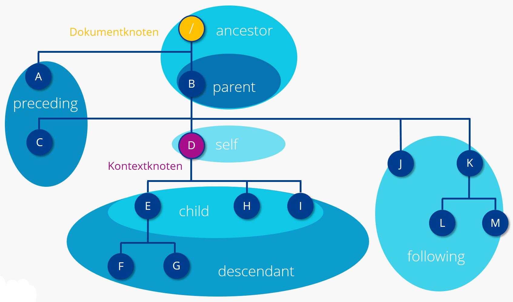

# Querying mit XPath <br/> <hr/> <br/>Prof. Dr. Christof Schöch <br/> <br/> <hr/> <p><strong>Modul Auszeichnungssprachen<br/>MSc. Digital Humanities, Universität Trier</strong></p> <hr/> <img height="60" data-src="img/basics/uni-trier.png"> :: - Ziele dieser Sitzung: - Vermitteln, warum XPath nützlich ist -- # Überblick 1. Motivation: Wozu XPath? 1. Das XML-Datenmodell von XPath 2. Lokalisierungsschritte 1. Achsen 2. Knotentest 3. Prädikate 3. Operatoren und Funktionen -- ## (1) Motivation: Wozu XPath? --- ### Motivation * Wir können XML-Dokumente erstellen * Wir können XML-Dokumente validieren * Aber was dann? * Wie bekommen wir Informationen wieder heraus? * Wie können wir die Informationen weiterverarbeiten? <br/><br/> **Antwort: XPath!** <!-- .element: class="fragment" data-fragment-index="1" --> --- ### Was ist XPath? * XPath bedeutet XML Path Language * Mit XPath können verschiedenen Teile eines XML-Dokuments präzise adressiert werden * XPath wird vom W3C entwickelt und gepflegt * XPath wird selbst nicht in XML formuliert * Die aktuellste Version von XPath ist 3.1 (2017), aber oft wird nur 1.0 unterstützt * XPath kommt meist in anderen Sprachen eingebettet vor --- ### XPath im Kontext * XPath: Navigation in XML-Dokumenten * XQuery: Abfragen auf XML-Dokumenten (verwendet XPath) * XSLT: Transformation von XML-Dokumenten (verwendet XPath) -- ## (2) Das XML-Datenmodell von XPath --- ### XML in XPath: Baum * Dokument-Knoten (nur konzeptuell) * Wurzel-Element (oberstes Element in der Hierarchie) * Element-Knoten (Name und Inhalt) * Attribut-Knoten (Name und Wert) * Text-Knoten --- ### Dokumentknoten vs. Kontext-Knoten * Jeder XPath geht von einem Punkt im Baum aus * Entweder vom Dokumentknoten aus (absoluter Pfad) * Oder vom Kontext-Knoten aus (relativer Pfad) * Die "Achsen" bestimmten die Richtung / Orientierung --- ### Die "Achsen" in XPath <small> |Achse|Deutsch|Beschreibung| |-----|-------|------------| |child|Kind|Alle direkt untergeordneten Kind-Knoten| |descendant|Nachkommen|Alle untergeordnete Knoten| |following|Nachfolgende Knoten|Alle im Dokument nachfolgenden Knoten (ohne Nachkommen)| |following-sibling|Nachfolgende Geschwisterknoten|Alle im Dokument nachfolgenden Knoten des selben Elternknotens| |attribute|Attribut|Alle Attributknoten eines Elementknotens| |ancestor|Vorfahr|Alle übergeordnete Knoten| |parent|Elternknoten|Der direkt übergeordnete Elternknoten| |preceding|Vorhergehende Knoten|Alle im Dokument vorangehenden Knoten (ohne Vorfahren)| |preceding-sibling*|Vorhergehende Geschwisterknoten|Alle im Dokument vorangehenden Knoten des selben Elternknotens| </small> --- #### XPath-Achsen visualisiert  <small>(Quelle: "XPath-Tutorial für Einsteiger", *Digital-Guide*, IONOS, 28.9.2020, <a href="https://www.ionos.de/digitalguide/websites/web-entwicklung/xpath-tutorial/">URL</a>.)</small> -- ## (3) Die Syntax der Lokalisierungspfade --- ### Lokalisierungspfade: Drei Teile 1. **Achse**: Richtung der weiteren Navigation (vom Dokumentknoten oder Kontextknoten aus) 1. **Knotentest**: Filter auf den in der Achse liegenden Knoten (bspw. Element oder Attribut) 1. **Prädikate** (optional): Weiterer Filter (bspw. Attribut-Wert) --- ### Ausgangspunkt * Dokumentknoten (absoluter Pfad): `/` * Kontextknoten (relativer Pfad): `./` ("aktueller Punkt", optional) * beliebige untergeordnete Position: `//` --- ### (A) Achsen |Achse |ausführlich|abgekürzt| |--------------|-----------|---------| |child |child:: | / | |parent |parent:: | .. | |attribute |attribute::| @ | --- ### (B) Knotentest * Name eines Elements * `//figure` * `/wlv/metadata/curator` * Name eines Attributs * `//@ref` * `//figure/@figureType` * `//@*` (beliebiges Attribut) --- ### (C) Prädikate * Wert eines Attributs * `//figure[@figureType="symbolic"]` * Position * `div[1]` * `div[last()]` * Ausgabe * `text()`(default) * `name()` -- ## Operatoren und Funktionen --- ### Operatoren * kleiner / größer als: `<` / `>` * `figure[@figureNum < 3]` * `figure[@figureNum > 1]` * und, oder: `and` bzw. `or` * `//figure[@figureType="symbolic" or @figureType="realistic"] ` * uvm. --- ### Funktionen * count() * `count(//figure)` * `count(//wineOrigin)` * sum() * `sum(//figure/@figureNum)` * string-length() * uvm. -- ## XPath in der Praxis --- ### Beispiel Weinetiketten --- ### XML-Kodierung <small> ``` <?xml version="1.0" encoding="UTF-8"?> <wlv xmlns="https://tcdh.uni-trier.de/wlv/0.1"> <metadata labelID="scs-piesport-0001" collectionID="scs"> <curator curatorID="#cs" /> <curationDate>2020-11-18</curationDate> </metadata> <label labelType="Lagenetikett"> <labelPart partType="front" partNum="1"> <physical sizeH="158" sizeV="89" shape="rectangle" material="paper" /> <visual> <figure figureType="realistic" figureNum="1" figurePosition="upper-across">Landscape: river, vineyards, village.</figure> <figure figureType="coat-of-arms" figureNum="2">Red coat of arms.</figure> <figure figureType="symbolic" figureNum="3">wine leaves</figure> </visual> <textual> <wineOrigin wineOriginType="Bereich">Mosel - Saar - Ruwer</wineOrigin> <wineOrigin wineOriginType="Lage" wineOriginLocality="Piesport" ref="wikidata:Q375762">Piesporter Lay</wineOrigin> <qualityGrapes qualityGrapesNorm="Auslese">Auslese</qualityGrapes> <agent agentRole="producer/bottler">Joh. Koenen-Veit, Weinbau - Weinversand</agent> </textual> </labelPart> </label> </wlv> ``` </small> --- ### Ausprobieren! <br/><br/><br/> * [XPath-Tester](http://videlibri.sourceforge.net/cgi-bin/xidelcgi?&data=%3C%3Fxml%20version%3D%221.0%22%20encoding%3D%22UTF-8%22%3F%3E%0A%3Cwlv%20xmlns%3D%22https%3A%2F%2Ftcdh.uni-trier.de%2Fwlv%2F0.1%22%3E%0A%20%20%3Cmetadata%20labelID%3D%22scs-piesport-0001%22%20collectionID%3D%22scs%22%3E%0A%20%20%20%20%3Ccurator%20curatorID%3D%22%23cs%22%20%2F%3E%0A%20%20%20%20%3CcurationDate%3E2020-11-18%3C%2FcurationDate%3E%0A%20%20%3C%2Fmetadata%3E%0A%20%20%3Clabel%20labelType%3D%22Lagenetikett%22%3E%0A%20%20%20%20%3ClabelPart%20partType%3D%22front%22%20partNum%3D%221%22%3E%0A%20%20%20%20%20%20%3Cphysical%20sizeH%3D%22158%22%20sizeV%3D%2289%22%20shape%3D%22rectangle%22%20material%3D%22paper%22%20%2F%3E%0A%20%20%20%20%20%20%3Cvisual%3E%0A%20%20%20%20%20%20%20%20%3Cfigure%20figureType%3D%22realistic%22%20figureNum%3D%221%22%20figurePosition%3D%22upper-across%22%3ELandscape%3A%20river%2C%20vineyards%2C%20village.%3C%2Ffigure%3E%0A%20%20%20%20%20%20%20%20%3Cfigure%20figureType%3D%22coat-of-arms%22%20figureNum%3D%222%22%3ERed%20coat%20of%20arms.%3C%2Ffigure%3E%0A%20%20%20%20%20%20%20%20%3Cfigure%20figureType%3D%22symbolic%22%20figureNum%3D%223%22%3Ewine%20leaves%3C%2Ffigure%3E%0A%20%20%20%20%20%20%3C%2Fvisual%3E%0A%20%20%20%20%20%20%3Ctextual%3E%0A%20%20%20%20%20%20%20%20%3CwineOrigin%20wineOriginType%3D%22Bereich%22%3EMosel%20-%20Saar%20-%20Ruwer%3C%2FwineOrigin%3E%0A%20%20%20%20%20%20%20%20%3CwineOrigin%20wineOriginType%3D%22Lage%22%20wineOriginLocality%3D%22Piesport%22%20ref%3D%22wikidata%3AQ375762%22%3EPiesporter%20Lay%3C%2FwineOrigin%3E%0A%20%20%20%20%20%20%20%20%3CqualityGrapes%20qualityGrapesNorm%3D%22Auslese%22%3EAuslese%3C%2FqualityGrapes%3E%0A%20%20%20%20%20%20%20%20%3Cagent%20agentRole%3D%22producer%2Fbottler%22%3EJoh.%20Koenen-Veit%2C%20Weinbau%20-%20Weinversand%3C%2Fagent%3E%0A%20%20%20%20%20%20%3C%2Ftextual%3E%0A%20%20%20%20%3C%2FlabelPart%3E%0A%20%20%3C%2Flabel%3E%0A%3C%2Fwlv%3E%09&=&extract=%2F%2F%40*&=%2F%2F&input-format=auto&printed-node-format=text&output-format=adhoc&compatibility=Enable%20all%20extensions&dot-notation=unambiguous&extract-kind=xpath2)<br/><br/><br/> * Oder * Aufrufen: http://videlibri.sourceforge.net/cgi-bin/xidelcgi * XML-Dokument reinkopieren * Dann XPath-Ausdrücke ausprobieren -- ## Abschluss --- #### Lektürehinweise Grundlagen / Referenz * "Einführung in XPath", *SelfHTML Wiki*, Version vom 13. Mai 2020, URL: https://wiki.selfhtml.org/wiki/XML/XSL/XPath. Weitere Empfehlungen zur Vertiefung * David Hunter et al.: "Chapter 7: XPath" in: *Beginning XML*, 4th edition. Wiley, 2007. * Doug Tidwell, "XPath: A Syntax for Describing Needles and Haystacks", in: *XSLT*, 2nd edition. O'Reilly, 2008. --- ## Danke! <br/><br/> <br/><br/> <br/><br/> <hr/> <small> <br/>Lizenz: <a href="https://creativecommons.org/licenses/by/4.0/">Creative Commons Attribution (CC BY)</a>, 2020. </small> <hr/>